PDF page 495 · book page sequence 461

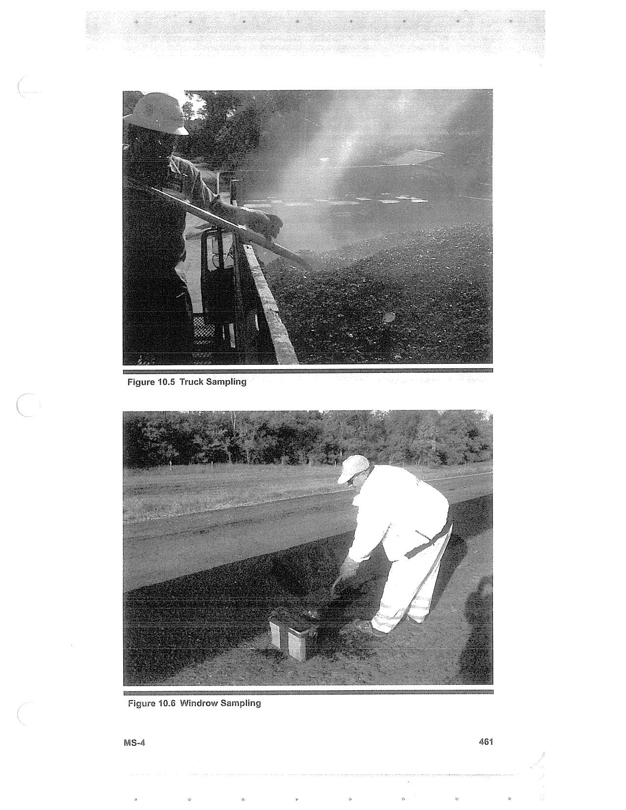
Searchable transcription
Unproofread OCR · 6 detected words; mean OCR confidence 93.44. Check technical values, symbols and table columns against the scan.
Figure 10.6 Windrow Sampling
MS-4 461
ASPHALT INSTITUTE · MS-4 · 2007
Part 2 · source PDF pages 495–510

Unproofread OCR · 6 detected words; mean OCR confidence 93.44. Check technical values, symbols and table columns against the scan.
Figure 10.6 Windrow Sampling
MS-4 461
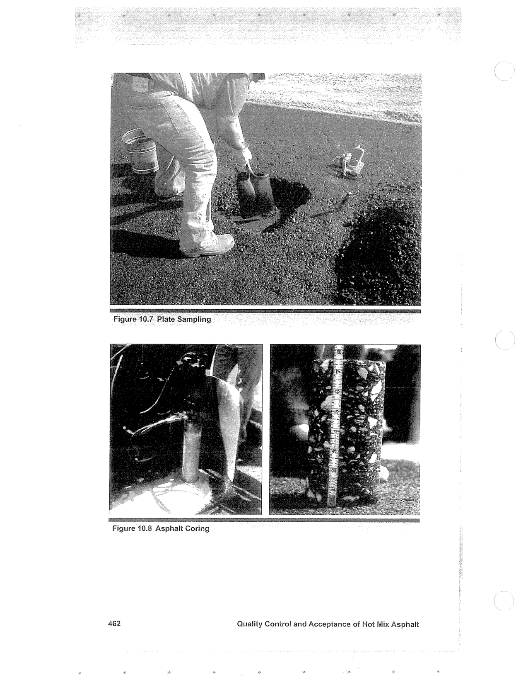
Unproofread OCR · 17 detected words; mean OCR confidence 76.8. Check technical values, symbols and table columns against the scan.
Figure 10.8 Asphalt Coring
462 Quality Control and Acceptance of Hot Mix Asphalt
co id. & &
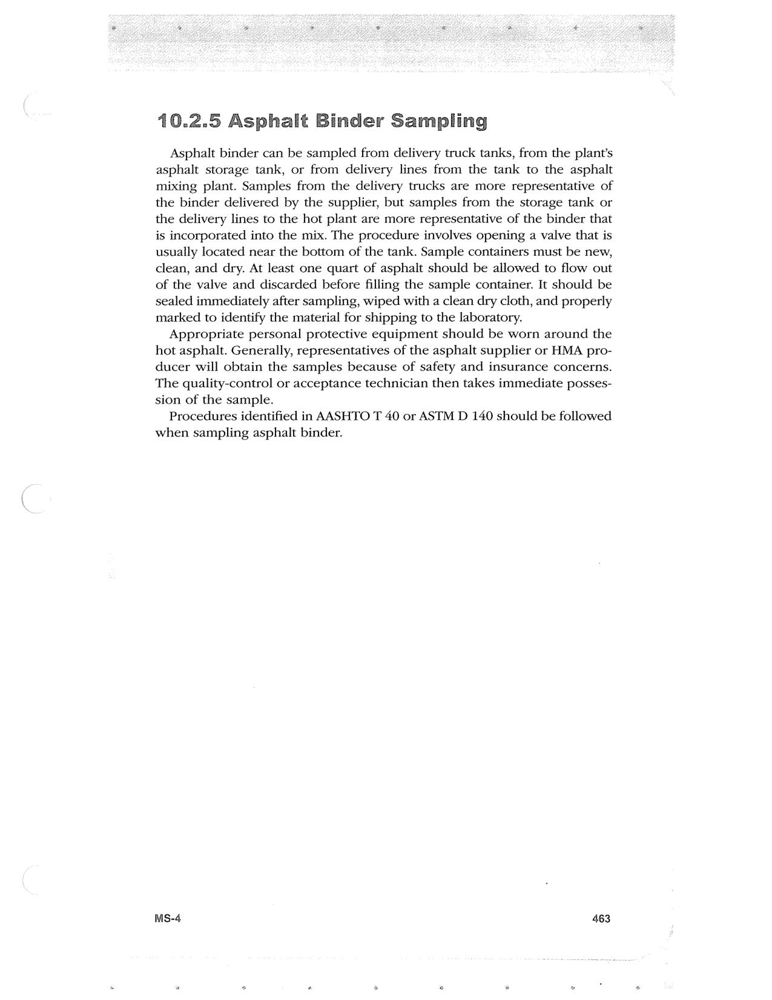
Unproofread OCR · 206 detected words; mean OCR confidence 96.07. Check technical values, symbols and table columns against the scan.
10.2.5 Asphalt Binder Sampling
Asphalt binder can be sampled from delivery truck tanks, from the plant’s asphalt storage tank, or from delivery lines from the tank to the asphalt mixing plant. Samples from the delivery trucks are more representative of the binder delivered by the supplier, but samples from the storage tank or the delivery lines to the hot plant are more representative of the binder that is incorporated into the mix. The procedure involves opening a valve that is usually located near the bottom of the tank. Sample containers must be new, clean, and dry. At least one quart of asphalt should be allowed to flow out of the valve and discarded before filling the sample container. It should be sealed immediately after sampling, wiped with a clean dry cloth, and properly marked to identify the material for shipping to the laboratory.
Appropriate personal protective equipment should be worn around the hot asphalt. Generally, representatives of the asphalt supplier or HMA pro- ducer will obtain the samples because of safety and insurance concerns. The quality-control or acceptance technician then takes immediate posses- sion of the sample.
Procedures identified in AASHTO T 40 or ASTM D 140 should be followed when sampling asphalt binder.
MS-4 463
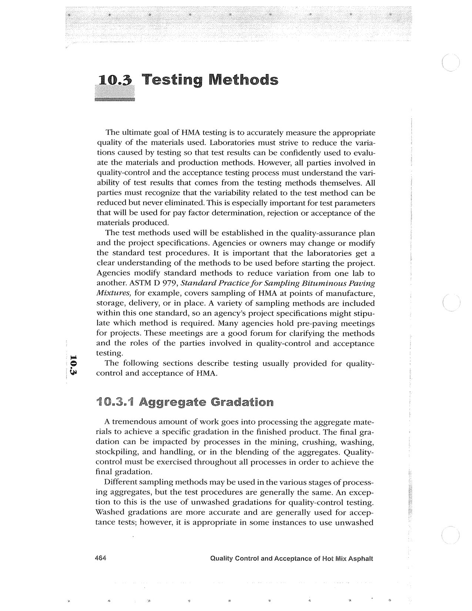
Unproofread OCR · 395 detected words; mean OCR confidence 95.54. Check technical values, symbols and table columns against the scan.
© ne
10.3 Testing Methods
The ultimate goal of HMA testing is to accurately measure the appropriate quality of the materials used. Laboratories must strive to reduce the varia- tions caused by testing so that test results can be confidently used to evalu- ate the materials and production methods. However, all parties involved in quality-control and the acceptance testing process must understand the vari- ability of test results that comes from the testing methods themselves. All parties must recognize that the variability related to the test method can be reduced but never eliminated. This is especially important for test parameters that will be used for pay factor determination, rejection or acceptance of the materials produced.
The test methods used will be established in the quality-assurance plan and the project specifications. Agencies or owners may change or modify the standard test procedures. It is important that the laboratories get a clear understanding of the methods to be used before starting the project. Agencies modify standard methods to reduce variation from one lab to another. ASTM D 979, Standard Practice for Sampling Bituminous Paving Mixtures, for example, covers sampling of HMA at points of manufacture, storage, delivery, or in place. A variety of sampling methods are included within this one standard, so an agency’s project specifications might stipu- late which method is required. Many agencies hold pre-paving meetings for projects. These meetings are a good forum for clarifying the methods and the roles of the parties involved in quality-control and. acceptance testing.
The following sections describe testing usually provided for quality- control and acceptance of HMA.
10.3.1 Aggregate Gradation
A tremendous amount of work goes into processing the aggregate mate- rials to achieve a specific gradation in the finished product. The final gra- dation can be impacted by processes in the mining, crushing, washing, stockpiling, and handling, or in the blending of the aggregates. Quality- control must be exercised throughout all processes in order to achieve the final gradation.
Different sampling methods may be used in the various stages of process- ing aggregates, but the test procedures are generally the same. An excep- tion to this is the use of unwashed gradations for quality-control testing. Washed gradations are more accurate and are generally used for accep- tance tests; however, it is appropriate in some instances to use unwashed
464 Quality Control and Acceptance of Hot Mix Asphalt
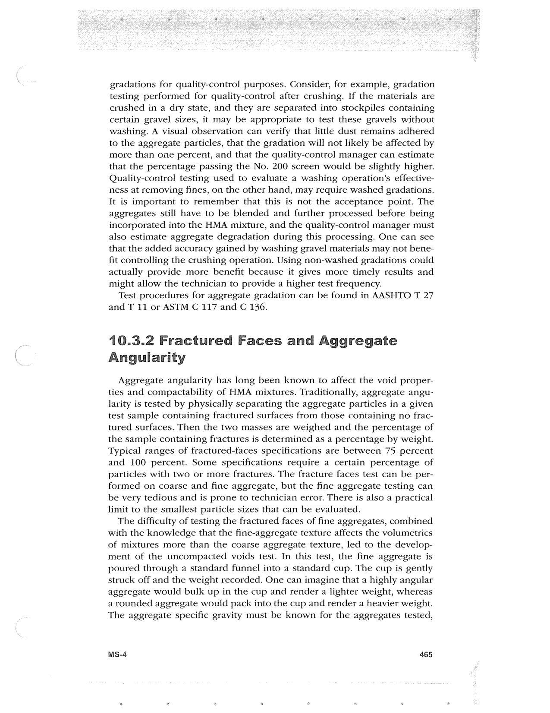
Unproofread OCR · 468 detected words; mean OCR confidence 95.75. Check technical values, symbols and table columns against the scan.
gradations for quality-control purposes. Consider, for example, gradation testing performed for quality-control after crushing. If the materials are crushed in a dry state, and they are separated into stockpiles containing certain gravel sizes, it may be appropriate to test these gravels without washing. A visual observation can verify that little dust remains adhered to the aggregate particles, that the gradation will not likely be affected by more than one percent, and that the quality-control manager can estimate that the percentage passing the No. 200 screen would be slightly higher. Quality-control testing used to evaluate a washing operation’s effective- ness at removing fines, on the other hand, may require washed gradations. It is important to remember that this is not the acceptance point. The aggregates still have to be blended and further processed before being incorporated into the HMA mixture, and the quality-control manager must also estimate aggregate degradation during this processing. One can see that the added accuracy gained by washing gravel materials may not bene- fit controlling the crushing operation. Using non-washed gradations could actually provide more benefit because it gives more timely results and might allow the technician to provide a higher test frequency.
Test procedures for aggregate gradation can be found in AASHTO T 27 and T 11 or ASTM C 117 and C 136.
10.3.2 Fractured Faces and Aggregate Angularity
Aggregate angularity has long been known to affect the void proper- ties and compactability of HMA mixtures. Traditionally, aggregate angu- larity is tested by physically separating the aggregate particles in a given test sample containing fractured surfaces from those containing no frac- tured surfaces. Then the two masses are weighed and the percentage of the sample containing fractures is determined as a percentage by weight. Typical ranges of fractured-faces specifications are between 75 percent and 100 percent. Some specifications require a certain percentage of particles with two or more fractures. The fracture faces test can be per- formed on coarse and fine aggregate, but the fine aggregate testing can be very tedious and is prone to technician error. There is also a practical limit to the smallest particle sizes that can be evaluated.
The difficulty of testing the fractured faces of fine aggregates, combined with the knowledge that the fine-aggregate texture affects the volumetrics of mixtures more than the coarse aggregate texture, led to the develop- ment of the uncompacted voids test. In this test, the fine aggregate is poured through a standard funnel into a standard cup. The cup is gently struck off and the weight recorded. One can imagine that a highly angular aggregate would bulk up in the cup and render a lighter weight, whereas a rounded aggregate would pack into the cup and render a heavier weight. The aggregate specific gravity must be known for the aggregates tested,
MS-4 465
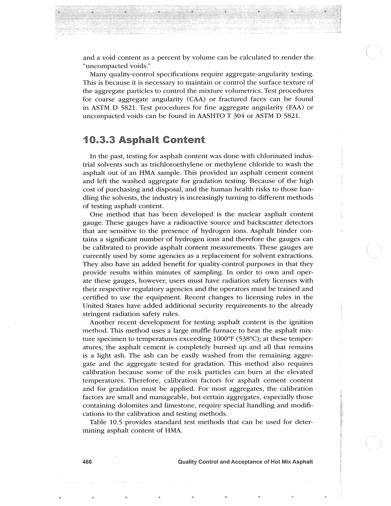
Unproofread OCR · 452 detected words; mean OCR confidence 96.02. Check technical values, symbols and table columns against the scan.
and a void content as a percent by volume can be calculated to render the “uncompacted voids.”
Many quality-control specifications require aggregate-angularity testing. This is because it is necessary to maintain or control the surface texture of the aggregate particles to control the mixture volumetrics. Test procedures for coarse aggregate angularity (CAA) or fractured faces can be found in ASTM D 5821. Test procedures for fine aggregate angularity (FAA) or uncompacted voids can be found in AASHTO T 304 or ASTM D 5821.
10.3.3 Asphalt Content
In the past, testing for asphalt content was done with chlorinated indus- trial solvents such as trichloroethylene or methylene chloride to wash the asphalt out of an HMA sample. This provided an asphalt cement content and left the washed aggregate for gradation testing. Because of the high cost of purchasing and disposal, and the human health risks to those han- dling the solvents, the industry is increasingly turning to different methods of testing asphalt content.
One method that has been developed is the nuclear asphalt content gauge. These gauges have a radioactive source and backscatter detectors that are sensitive to the presence of hydrogen ions. Asphalt binder con- tains a significant number of hydrogen ions and therefore the gauges can be calibrated to provide asphalt content measurements. These gauges are currently used by some agencies as a replacement for solvent extractions. They also have an added benefit for quality-control purposes in that they provide results within minutes of sampling. In order to own and oper- ate these gauges, however, users must have radiation safety licenses with their respective regulatory agencies and the operators must be trained and certified to use the equipment. Recent changes to licensing rules in the United States have added additional security requirements to the already stringent radiation safety rules.
Another recent development for testing asphalt content is the ignition method. This method uses a large muffle furnace to heat the asphalt mix- ture specimen to temperatures exceeding 1000°F (538°C); at these temper- atures, the asphalt cement is completely burned up and all that remains is a light ash. The ash can be easily washed from the remaining aggre- gate and the aggregate tested for gradation. This method also requires calibration because some of the rock particles can burn at the elevated temperatures. Therefore, calibration factors for asphalt cement content and for gradation must be applied. For most aggregates, the calibration factors are small and manageable, but certain aggregates, especially those containing dolomites and limestone, require special handling and modifi- cations to the calibration and testing methods.
Table 10.5 provides standard test methods that can be used for deter- mining asphalt content of HMA.
466 Quality Control and Acceptance of Hot Mix Asphalt
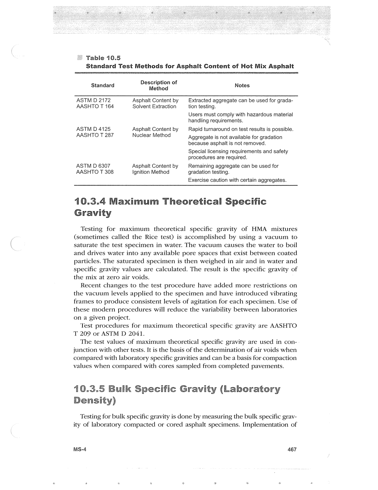
Unproofread OCR · 329 detected words; mean OCR confidence 95.8. Check technical values, symbols and table columns against the scan.
Table 10.5
Standard Test Methods for Asphalt Content of Hot Mix Asphalt
Description of
Standard Method Notes ASTM D 2172 Asphalt Content by Extracted aggregate can be used for grada- AASHTO T 164 Solvent Extraction tion testing. Users must comply with hazardous material handling requirements. ASTM D 4125 Asphalt Content by Rapid turnaround on test results is possible. AASHTO T 287 Nuclear Method Aggregate is not available for gradation because asphalt is not removed. Special licensing requirements and safety procedures are required. ASTM D 6307 Asphalt Content by Remaining aggregate can be used for AASHTO T 308 Ignition Method gradation testing.
Exercise caution with certain aggregates.
10.3.4 Maximum Theoretical Specific Gravity
Testing for maximum theoretical specific gravity of HMA mixtures (sometimes called the Rice test) is accomplished by using a vacuum to saturate the test specimen in water. The vacuum causes the water to boil and drives water into any available pore spaces that exist between coated particles. The saturated specimen is then weighed in air and in water and specific gravity values are calculated. The result is the specific gravity of the mix at zero air voids.
Recent changes to the test procedure have added more restrictions on the vacuum levels applied to the specimen and have introduced vibrating frames to produce consistent levels of agitation for each specimen. Use of these modern procedures will reduce the variability between laboratories on a given project.
‘Test procedures for maximum theoretical specific gravity are AASHTO T 209 or ASTM D 2041.
The test values of maximum theoretical specific gravity are used in con-- junction with other tests. It is the basis of the determination of air voids when compared with laboratory specific gravities and can be a basis for compaction values when compared with cores sampled from completed pavements.
10.3.5 Bulk Specific Gravity (Laboratory Density)
Testing for bulk specific gravity is done by measuring the bulk specific grav- ity of laboratory compacted or cored asphalt specimens. Implementation of
MS-4 467
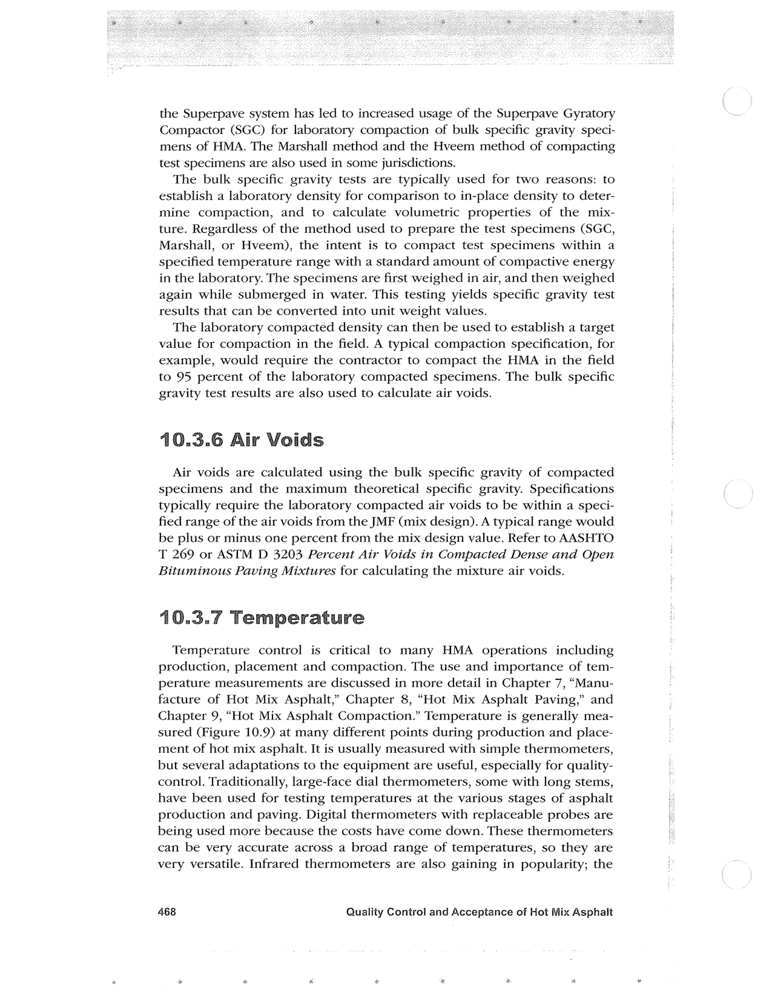
Unproofread OCR · 445 detected words; mean OCR confidence 95.68. Check technical values, symbols and table columns against the scan.
the Superpave system has led to increased usage of the Superpave Gyratory Compactor (SGC) for laboratory compaction of bulk specific gravity speci- mens of HMA. The Marshall method and the Hveem method of compacting test specimens are also used in some jurisdictions.
The bulk specific gravity tests are typically used for two reasons: to establish a laboratory density for comparison to in-place density to deter- mine compaction, and to calculate volumetric properties of the mix- ture. Regardless of the method used to prepare the test specimens (SGC, Marshall, or Hveem), the intent is to compact test specimens within a specified temperature range with a standard amount of compactive energy in the laboratory. The specimens are first weighed in air, and then weighed again while submerged in water. This testing yields specific gravity test results that can be converted into unit weight values.
The laboratory compacted density can then be used to establish a target value for compaction in the field. A typical compaction specification, for example, would require the contractor to compact the HMA in the field to 95 percent of the laboratory compacted specimens. The bulk specific gravity test results are also used to calculate air voids.
10.3.6 Air Voids
Air voids are calculated using the bulk specific gravity of compacted specimens and the maximum theoretical specific gravity. Specifications typically require the laboratory compacted air voids to be within a speci- fied range of the air voids from the JMF Gmix design). A typical range would be plus or minus one percent from the mix design value. Refer to AASHTO T 269 or ASTM D 3203 Percent Air Voids in Compacted Dense and Open Bituminous Paving Mixtures for calculating the mixture air voids.
10.3.7 Temperature
Temperature control is critical to many HMA operations including production, placement and compaction. The use and importance of tem- perature measurements are discussed in more detail in Chapter 7, “Manu- facture of Hot Mix Asphalt,” Chapter 8, “Hot Mix Asphalt Paving,” and Chapter 9, “Hot Mix Asphalt Compaction.” Temperature is generally mea- sured (Figure 10.9) at many different points during production and place- ment of hot mix asphalt. It is usually measured with simple thermometers, but several adaptations to the equipment are useful, especially for quality- control. Traditionally, large-face dial thermometers, some with long stems, have been used for testing temperatures at the various stages of asphalt production and paving. Digital thermometers with replaceable probes are being used more because the costs have come down. These thermometers can be very accurate across a broad range of temperatures, so they are very versatile. Infrared thermometers are also gaining in popularity; the
468 Quality Control and Acceptance of Hot Mix Asphalt
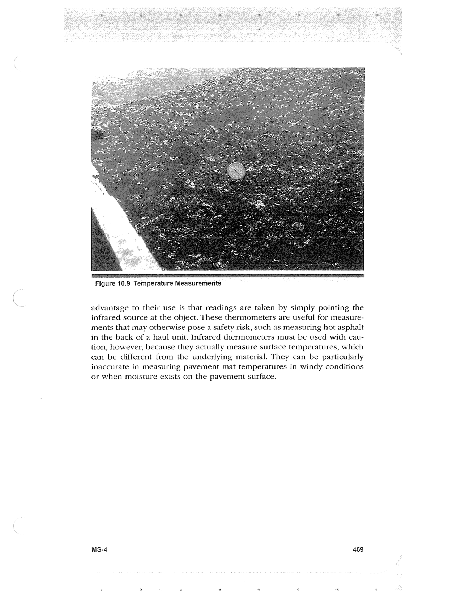
Unproofread OCR · 94 detected words; mean OCR confidence 96.01. Check technical values, symbols and table columns against the scan.
Figure 10.9 Temperature Measurements
advantage to their use is that readings are taken by simply pointing the infrared source at the object. These thermometers are useful for measure- ments that may otherwise pose a safety risk, such as measuring hot asphalt in the back of a haul unit. Infrared thermometers must be used with cau- tion, however, because they actually measure surface temperatures, which can be different from the underlying material. They can be particularly inaccurate in measuring pavement mat temperatures in windy conditions or when moisture exists on the pavement surface.
MS-4 469
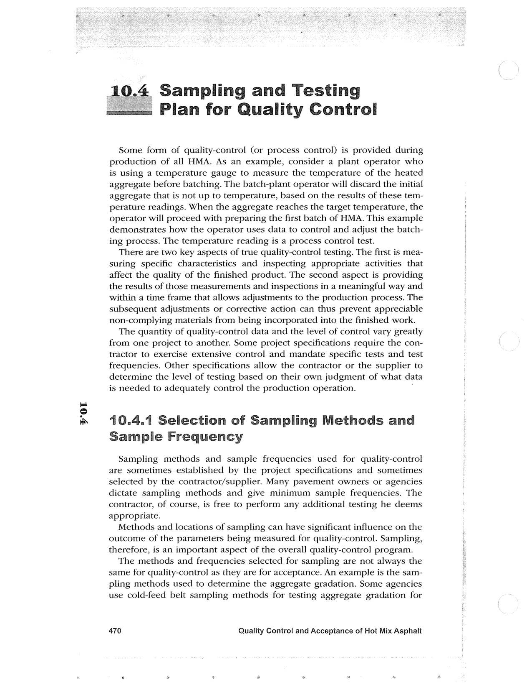
Unproofread OCR · 391 detected words; mean OCR confidence 95.8. Check technical values, symbols and table columns against the scan.
OL
oa
10.4 Sampling and Testing Plan for Quality Control
Some form of quality-control (or process control) is provided during production of all HMA. As an example, consider a plant operator who is using a temperature gauge to measure the temperature of the heated aggregate before batching. The batch-plant operator will discard the initial aggregate that is not up to temperature, based on the results of these tem- perature readings. When the aggregate reaches the target temperature, the operator will proceed with preparing the first batch of HMA. This example demonstrates how the operator uses data to control and adjust the batch- ing process. The temperature reading is a process control test.
There are two key aspects of true quality-control testing. The first is mea- suring specific characteristics and inspecting appropriate activities that affect the quality of the finished product. The second aspect is providing the results of those measurements and inspections in a meaningful way and within a time frame that allows adjustments to the production process. The subsequent adjustments or corrective action can thus prevent appreciable non-complying materials from being incorporated into the finished work.
The quantity of quality-control data and the level of control vary greatly from one project to another. Some project specifications require the con- tractor to exercise extensive control and mandate specific tests and test frequencies. Other specifications allow the contractor or the supplier to determine the level of testing based on their own judgment of what data is needed to adequately control the production operation.
10.4.1 Selection of Sampling Methods and Sample Frequency
Sampling methods and sample frequencies used for quality-control are sometimes established by the project specifications and sometimes selected by the contractor/supplier. Many pavement owners or agencies dictate sampling methods and give minimum sample frequencies. The contractor, of course, is free to perform any additional testing he deems appropriate.
Methods and locations of sampling can have significant influence on the outcome of the parameters being measured for quality-control. Sampling, therefore, is an important aspect of the overall quality-control program.
The methods and frequencies selected for sampling are not always the same for quality-control as they are for acceptance. An example is the sam- pling methods used to determine the aggregate gradation. Some agencies use cold-feed belt sampling methods for testing aggregate gradation for
470 Quality Control and Acceptance of Hot Mix Asphalt
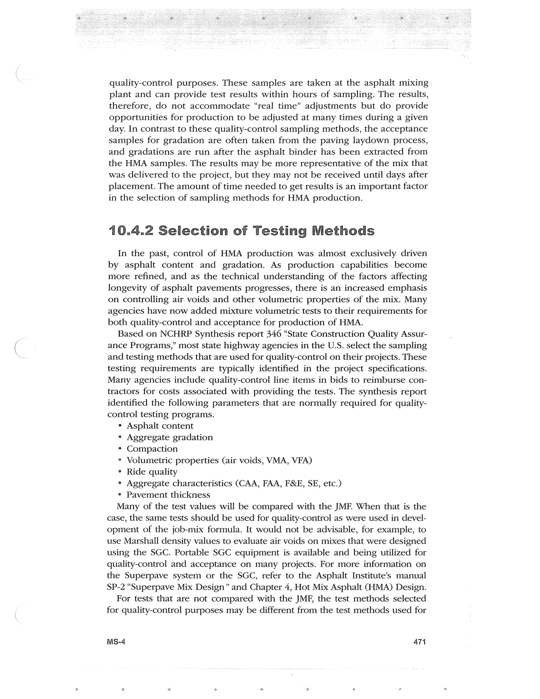
Unproofread OCR · 438 detected words; mean OCR confidence 95.22. Check technical values, symbols and table columns against the scan.
quality-control purposes. These samples are taken at the asphalt mixing plant and can provide test results within hours of sampling. The results, therefore, do not accommodate “real time” adjustments but do provide opportunities for production to be adjusted at many times during a given day. In contrast to these quality-control sampling methods, the acceptance samples for gradation are often taken from the paving laydown process, and gradations are run after the asphalt binder has been extracted from the HMA samples. The results may be more representative of the mix that was delivered to the project, but they may not be received until days after placement. The amount of time needed to get results is an important factor in the selection of sampling methods for HMA production.
10.4.2 Selection of Testing Methods
In the past, control of HMA production was almost exclusively driven by asphalt content and gradation. As production capabilities become more refined, and as the technical understanding of the factors affecting longevity of asphalt pavements progresses, there is an increased emphasis on controlling air voids and other volumetric properties of the mix. Many agencies have now added mixture volumetric tests to their requirements for both quality-control and acceptance for production of HMA.
Based on NCHRP Synthesis report 346 “State Construction Quality Assur- ance Programs,” most state highway agencies in the U.S. select the sampling and testing methods that are used for quality-control on their projects. These testing requirements are typically identified in the project specifications. Many agencies include quality-control line items in bids to reimburse con- tractors for costs associated with providing the tests. The synthesis report identified the following parameters that are normally required for quality- control testing programs.
° Asphalt content
° Aggregate gradation
° Compaction
* Volumetric properties (air voids, VMA, VFA)
° Ride quality
° Aggregate characteristics (CAA, FAA, F&E, SE, etc.)
° Pavement thickness
Many of the test values will be compared with the JME When that is the case, the same tests should be used for quality-control as were used in devel- opment of the job-mix formula. It would not be advisable, for example, to use Marshall density values to evaluate air voids on mixes that were designed using the SGC. Portable SGC equipment is available and being utilized for quality-control and acceptance on many projects. For more information on the Superpave system or the SGC, refer to the Asphalt Institute’s manual SP-2 “Superpave Mix Design” and Chapter 4, Hot Mix Asphalt (HMA) Design.
For tests that are not compared with the JMF, the test methods selected for quality-control purposes may be different from the test methods used for
MS-4 474
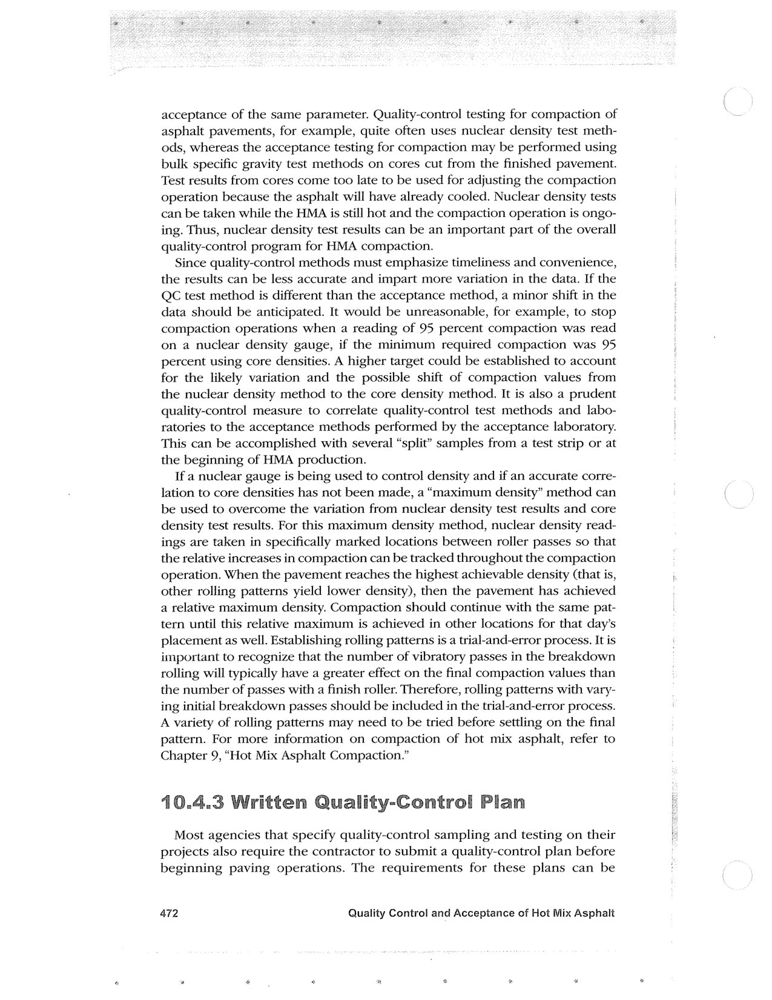
Unproofread OCR · 510 detected words; mean OCR confidence 95.99. Check technical values, symbols and table columns against the scan.
acceptance of the same parameter. Quality-control testing for compaction of asphalt pavements, for example, quite often uses nuclear density test meth- ods, whereas the acceptance testing for compaction may be performed using bulk specific gravity test methods on cores cut from the finished pavement. Test results from cores come too late to be used for adjusting the compaction operation because the asphalt will have already cooled. Nuclear density tests can be taken while the HMA is still hot and the compaction operation is ongo- ing. Thus, nuclear density test results can be an important part of the overall quality-control program for HMA compaction.
Since quality-control methods must emphasize timeliness and convenience, the results can be less accurate and impart more variation in the data. If the QC test method is different than the acceptance method, a minor shift in the data should be anticipated. It would be unreasonable, for example, to stop compaction operations when a reading of 95 percent compaction was read on a nuclear density gauge, if the minimum required compaction was 95 percent using core densities. A higher target could be established to account for the likely variation and the possible shift of compaction values from the nuclear density method to the core density method. It is also a prudent quality-control measure to correlate quality-control test methods and labo- ratories to the acceptance methods performed by the acceptance laboratory. This can be accomplished with several “split” samples from a test strip or at the beginning of HMA production.
If a nuclear gauge is being used to control density and if an accurate corre- lation to core densities has not been made, a “maximum density” method can be used to overcome the variation from nuclear density test results and core density test results. For this maximum density method, nuclear density read- ings are taken in specifically marked locations between roller passes so that the relative increases in compaction can be tracked throughout the compaction operation. When the pavement reaches the highest achievable density (that is, other rolling patterns yield lower density), then the pavement has achieved a relative maximum density. Compaction should continue with the same pat- tern until this relative maximum is achieved in other locations for that day’s placement as well. Establishing rolling patterns is a trial-and-error process. It is important to recognize that the number of vibratory passes in the breakdown rolling will typically have a greater effect on the final compaction values than the number of passes with a finish roller. Therefore, rolling patterns with vary- ing initial breakdown passes should be included in the trial-and-error process. A variety of rolling patterns may need to be tried before settling on the final pattern. For more information on compaction of hot mix asphalt, refer to Chapter 9, “Hot Mix Asphalt Compaction.”
10.4.3 Written Quality-Control Plan
Most agencies that specify quality-control sampling and testing on their projects also require the contractor to submit a quality-control plan before beginning paving operations. The requirements for these plans can be
472 Quality Control and Acceptance of Hot Mix Asphalt
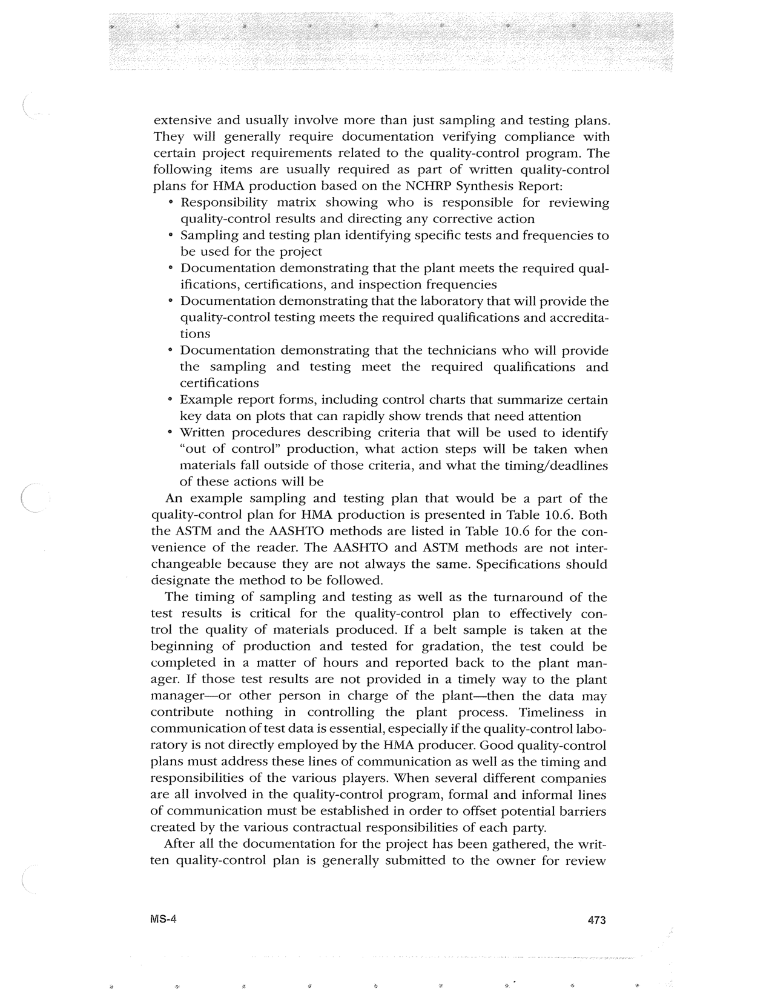
Unproofread OCR · 454 detected words; mean OCR confidence 95.27. Check technical values, symbols and table columns against the scan.
extensive and usually involve more than just sampling and testing plans. They will generally require documentation verifying compliance with certain project requirements related to the quality-control program. The following items are usually required as part of written quality-control plans for HMA production based on the NCHRP Synthesis Report:
* Responsibility matrix showing who is responsible for reviewing quality-control results and directing any corrective action Sampling and testing plan identifying specific tests and frequencies to be used for the project
° Documentation demonstrating that the plant meets the required qual-
ifications, certifications, and inspection frequencies
* Documentation demonstrating that the laboratory that will provide the
quality-control testing meets the required qualifications and accredita- tions
¢ Documentation demonstrating that the technicians who will provide
the sampling and testing meet the required qualifications and certifications
* Example report forms, including control charts that summarize certain
key data on plots that can rapidly show trends that need attention
¢ Written procedures describing criteria that will be used to identify
“out of control” production, what action steps will be taken when materials fall outside of those criteria, and what the timing/deadlines of these actions will be
An example sampling and testing plan that would be a part of the quality-control plan for HMA production is presented in Table 10.6. Both the ASTM and the AASHTO methods are listed in Table 10.6 for the con- venience of the reader. The AASHTO and ASTM methods are not inter- changeable because they are not always the same. Specifications should designate the method to be followed.
The timing of sampling and testing as well as the turnaround of the test results is critical for the quality-control plan to effectively con- trol the quality of materials produced. If a belt sample is taken at the beginning of production and tested for gradation, the test could be completed in a matter of hours and reported back to the plant man- ager. If those test results are not provided in a timely way to the plant manager—or other person in charge of the plant—then the data may contribute nothing in controlling the plant process. Timeliness in communication of test data is essential, especially if the quality-control labo- ratory is not directly employed by the HMA producer. Good quality-control plans must address these lines of communication as well as the timing and responsibilities of the various players. When several different companies are all involved in the quality-control program, formal and informal lines of communication must be established in order to offset potential barriers created by the various contractual responsibilities of each party.
After all the documentation for the project has been gathered, the writ- ten quality-control plan is generally submitted to the owner for review
MS-4 473
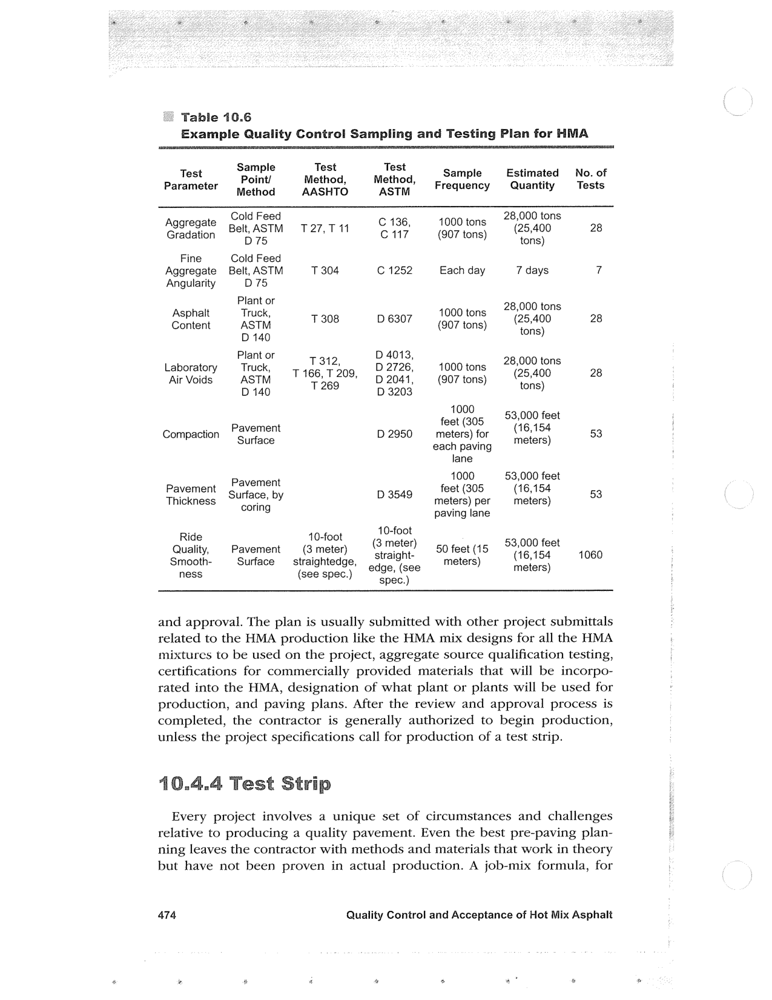
Unproofread OCR · 321 detected words; mean OCR confidence 88.85. Check technical values, symbols and table columns against the scan.
Table 10.6 Example Quality Control Sampling and Testing Plan for HMA
Sample Test Test . Method AASHTO ASTM y Cold Feed 28,000 tons Aggregate C 136, 1000 tons ; , Belt, ASTM T 27, T 11 (25,400 28 Gradation D75 C117 (907 tons) tons) Fine Cold Feed Aggregate Belt, ASTM T 304 C 1252 Each day 7 days 7 Angularity D75 Plant or 28,000 tons Asphalt Truck, 1000 tons / Content ASTM 7308 D 6307 (907 tons) Con. 28 D 140 Plant or D 4013, Laboratory Truck, tage p99 (0.2726, 1000 tons 795.400 9g Air Voids ASTM T2690 D 2041, (907 tons) tons) D 140 D 3203 ; eat (305 53,000 feet . Pavement (16,154 Compaction Surface D 2950 meters) for meters) 53 each paving lane Pavement 1000 53,000 feet Pavement feet (305 (16,154 Thickness Surface, by D 3549 meters) per meters) 53 coring : paving lane . 10-foot Ride 10-foot Quality, Pavement (3 meter) meer) 50 feet (15 6 184 1060 Smooth- Surface straightedge, edae ‘see meters) meters) ness (see spec.) spec )
and approval. The plan is usually submitted with other project submittals related to the HMA production like the HMA mix designs for all the HMA mixtures to be used on the project, aggregate source qualification testing, certifications for commercially provided materials that will be incorpo- rated into the HMA, designation of what plant or plants will be used for production, and paving plans. After the review and approval process is completed, the contractor is generally authorized to begin production, unless the project specifications call for production of a test strip.
10.4.4 Test Strip
Every project involves a unique set of circumstances and challenges relative to producing a quality pavement. Even the best pre-paving plan- ning leaves the contractor with methods and materials that work in theory but have not been proven in actual production. A job-mix formula, for
474 Quality Control and Acceptance of Hot Mix Asphalt
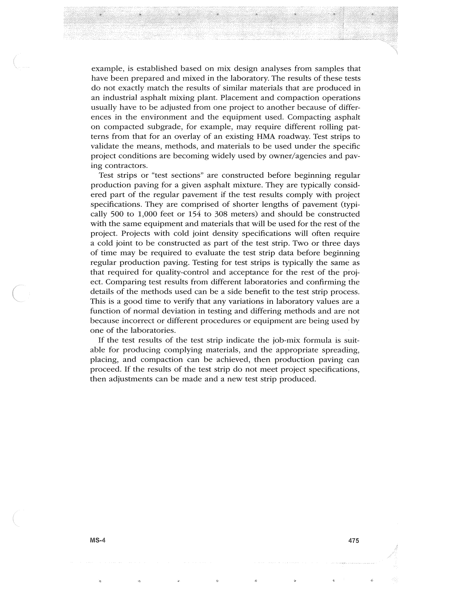
Unproofread OCR · 379 detected words; mean OCR confidence 95.83. Check technical values, symbols and table columns against the scan.
example, is established based on mix design analyses from samples that have been prepared and mixed in the laboratory. The results of these tests do not exactly match the results of similar materials that are produced in an industrial asphalt mixing plant. Placement and compaction operations usually have to be adjusted from one project to another because of differ- ences in the environment and the equipment used. Compacting asphalt on compacted subgrade, for example, may require different rolling pat- terns from that for an overlay of an existing HMA roadway. Test strips to validate the means, methods, and materials to be used under the specific project conditions are becoming widely used by owner/agencies and pav- ing contractors.
Test strips or “test sections” are constructed before beginning regular production paving for a given asphalt mixture. They are typically consid- ered part of the regular pavement if the test results comply with project specifications. They are comprised of shorter lengths of pavement (typi- cally 500 to 1,000 feet or 154 to 308 meters) and should be constructed with the same equipment and materials that will be used for the rest of the project. Projects with cold joint density specifications will often require a cold joint to be constructed as part of the test strip. Two or three days of time may be required to evaluate the test strip data before beginning regular production paving. Testing for test strips is typically the same as that required for quality-control and acceptance for the rest of the proj- ect. Comparing test results from different laboratories and confirming the details of the methods used can be a side benefit to the test strip process. This is a good time to verify that any variations in laboratory values are a function of normal deviation in testing and differing methods and are not because incorrect or different procedures or equipment are being used by one of the laboratories.
If the test results of the test strip indicate the job-mix formula is suit- able for producing complying materials, and the appropriate spreading, placing, and compaction can be achieved, then production paving can proceed. If the results of the test strip do not meet project specifications, then adjustments can be made and a new test strip produced.
MsS-4 475
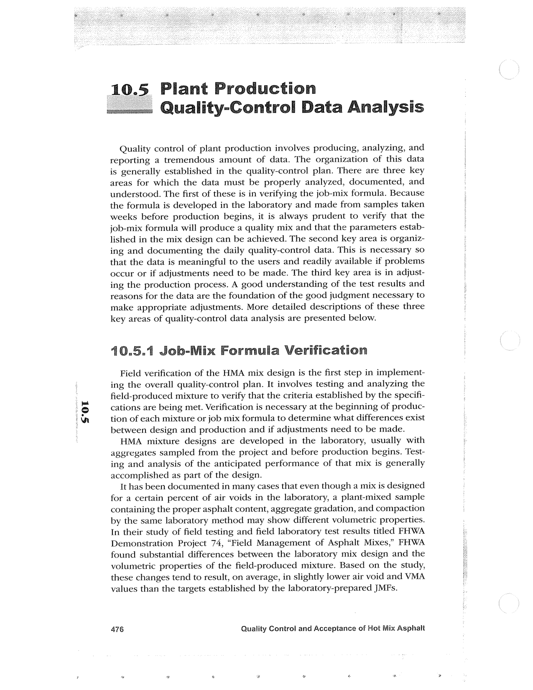
Unproofread OCR · 425 detected words; mean OCR confidence 95.94. Check technical values, symbols and table columns against the scan.
10.5 Plant Production
Quality-Control Data Analysis
Quality control of plant production involves producing, analyzing, and reporting a tremendous amount of data. The organization of this data is generally established in the quality-control plan. There are three key areas for which the data must be properly analyzed, documented, and understood. The first of these is in verifying the job-mix formula. Because the formula is developed in the laboratory and made from samples taken weeks before production begins, it is always prudent to verify that the job-mix formula will produce a quality mix and that the parameters estab- lished in the mix design can be achieved. The second key area is organiz- ing and documenting the daily quality-control data. This is necessary so that the data is meaningful to the users and readily available if problems occur or if adjustments need to be made. The third key area is in adjust- ing the production process. A good understanding of the test results and reasons for the data are the foundation of the good judgment necessary to make appropriate adjustments. More detailed descriptions of these three key areas of quality-control data analysis are presented below.
10.5.1 Job-Mix Formula Verification
Field verification of the HMA mix design is the first step in implement- ing the overall quality-control plan. It involves testing and analyzing the field-produced mixture to verify that the criteria established by the specifi- cations are being met. Verification is necessary at the beginning of produc- tion of each mixture or job mix formula to determine what differences exist between design and production and if adjustments need to be made.
HMA mixture designs are developed in the laboratory, usually with aggregates sampled from the project and before production begins. Test- ing and analysis of the anticipated performance of that mix is generally accomplished as part of the design.
It has been documented in many cases that even though a mix is designed for a certain percent of air voids in the laboratory, a plant-mixed sample containing the proper asphalt content, aggregate gradation, and compaction by the same laboratory method may show different volumetric properties. In their study of field testing and field laboratory test results titled FHWA Demonstration Project 74, “Field Management of Asphalt Mixes,” FHWA found substantial differences between the laboratory mix design and the volumetric properties of the field-produced mixture. Based on the study, these changes tend to result, on average, in slightly lower air void and VMA values than the targets established by the laboratory-prepared JMFs.
476 Quality Control and Acceptance of Hot Mix Asphalt